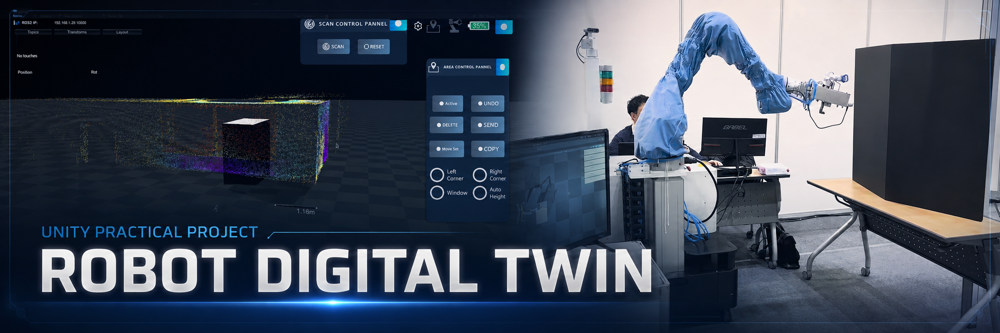
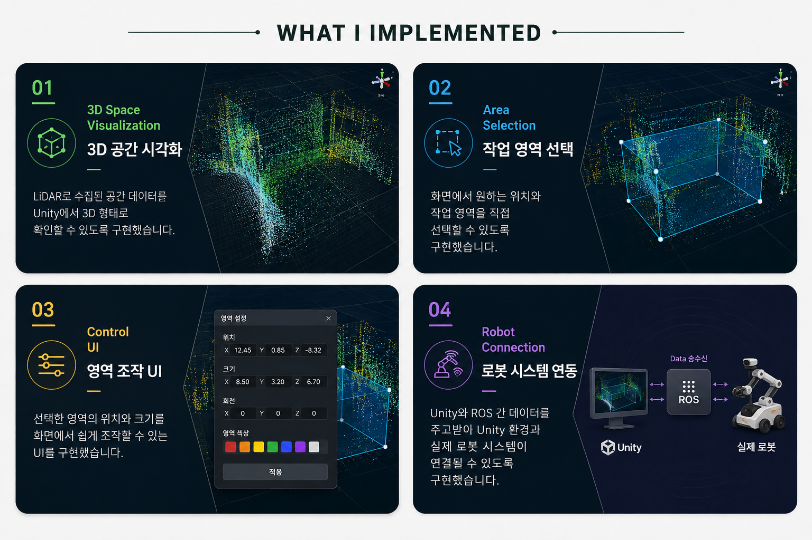
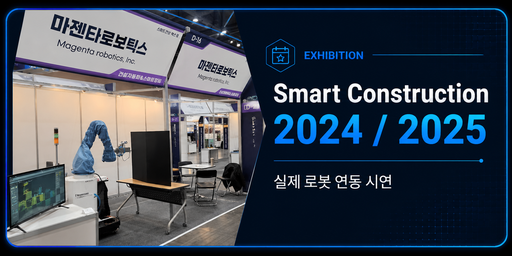

Unity Digital Twin Demo
3D 공간 시각화와 작업 영역 선택,
Unity UI 조작 기능을 확인할 수 있는
Digital Twin 데모입니다.

UNITY PRACTICAL PROJECT
Unity · C# · LiDAR · Point Cloud · ROS
Unity에서 3D 공간 데이터를 시각화하고,
화면에서 작업 영역을 선택·조작할 수 있도록 만든
디지털트윈 팀 프로젝트입니다.
Unity 파트를 담당했으며,
Unity와 ROS 간 데이터 송수신을 구현해
실제 로봇 시스템과 연동될 수 있도록 구성했습니다.
완성된 시스템은 Smart Construction 2024 / 2025에서
실제 로봇과 연결해 시연했습니다.
3D 공간 시각화와 작업 영역 선택,
Unity UI 조작 기능을 확인할 수 있는
Digital Twin 데모입니다.
Smart Construction 전시 현장에서
Unity 기반 Digital Twin 시스템을
실제 로봇과 연동해 시연한 영상입니다.

3D Space Visualization: LiDAR로 수집된 공간 데이터를 Unity에서 3D 형태로 확인할 수 있도록 구현했습니다.
Area Selection: 화면에서 원하는 위치와 작업 영역을 직접 선택할 수 있도록 구현했습니다.
Control UI: 선택한 영역의 위치와 크기를 화면에서 쉽게 조작할 수 있는 UI를 구현했습니다.
Robot Connection: Unity와 ROS 간 데이터를 주고받아 Unity 환경과 실제 로봇 시스템이 연결될 수 있도록 구현했습니다.

개발한 Unity 기반 Digital Twin 시스템은
Smart Construction 2024 / 2025에서
실제 로봇과 연동하여 시연했습니다.